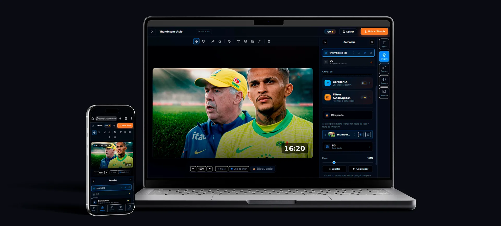
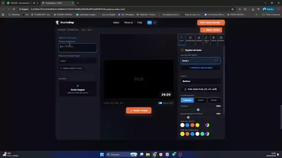
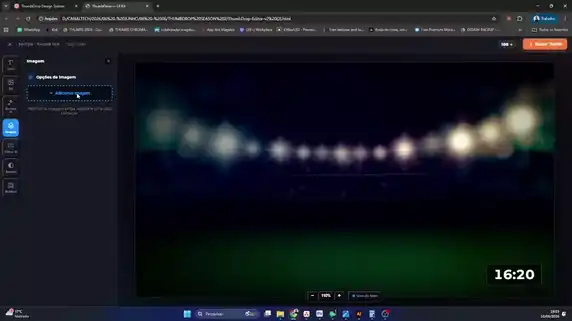
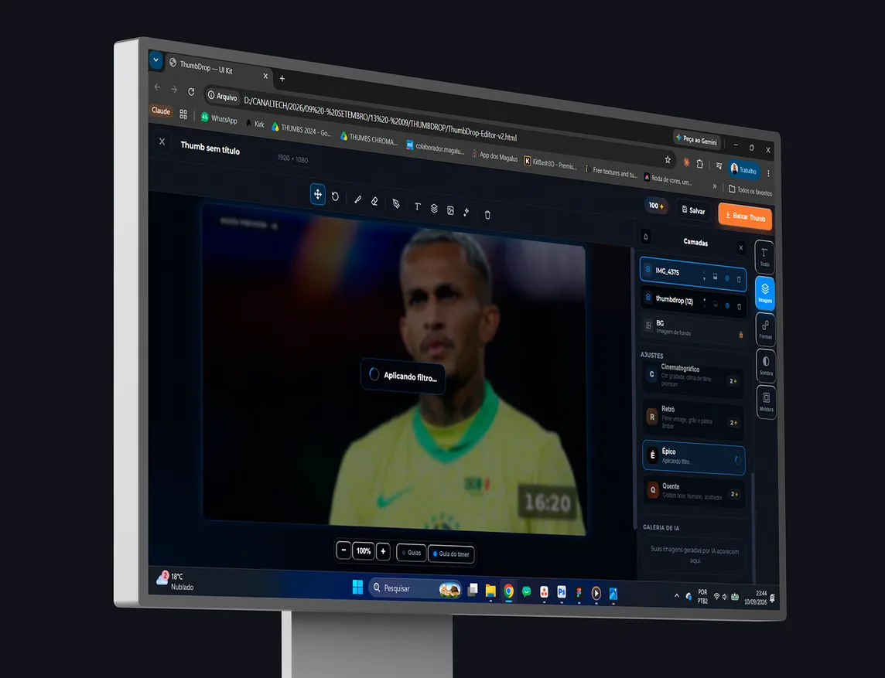
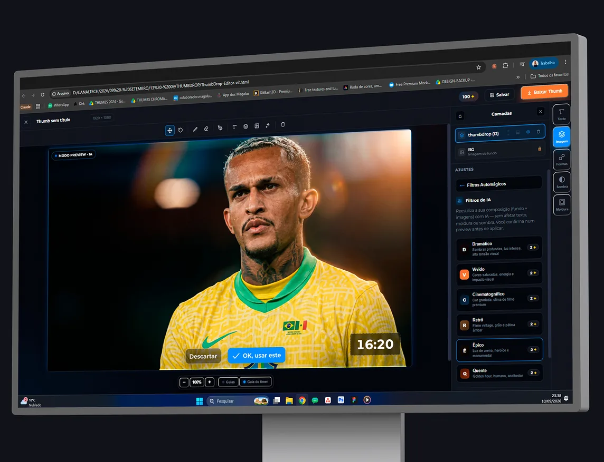
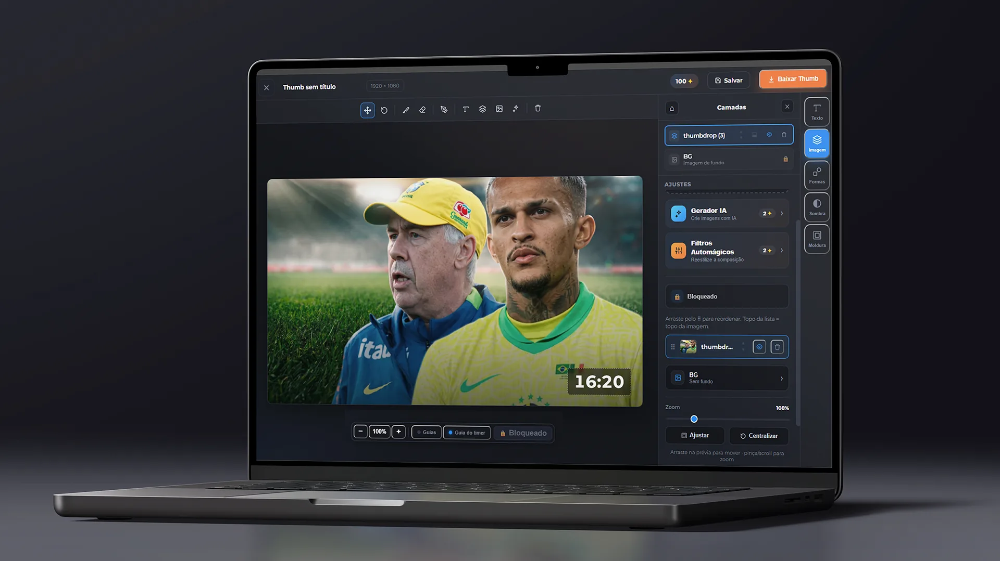
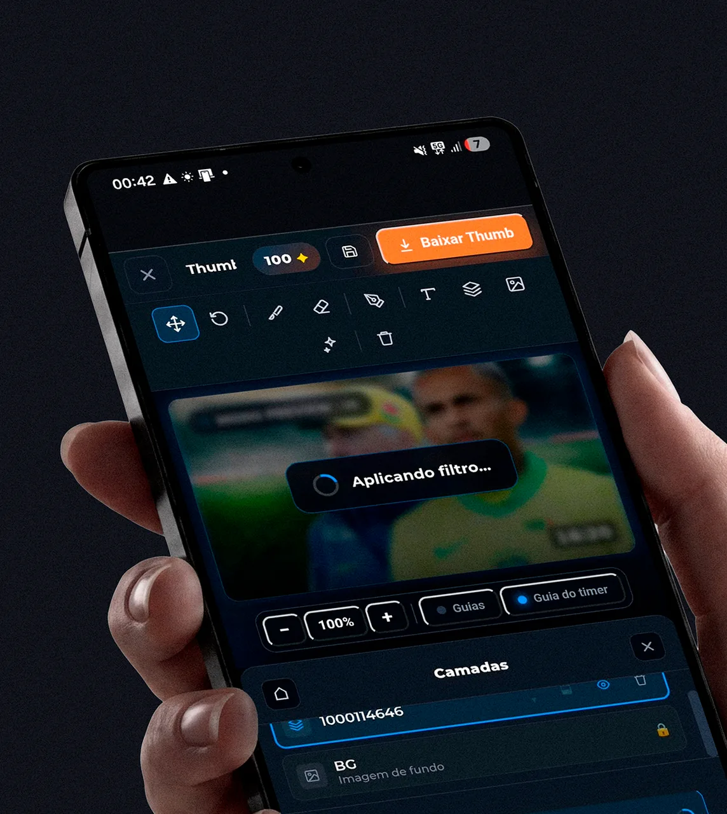
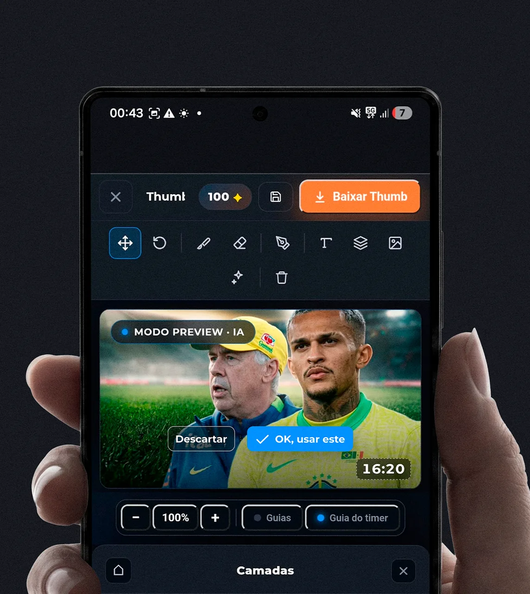
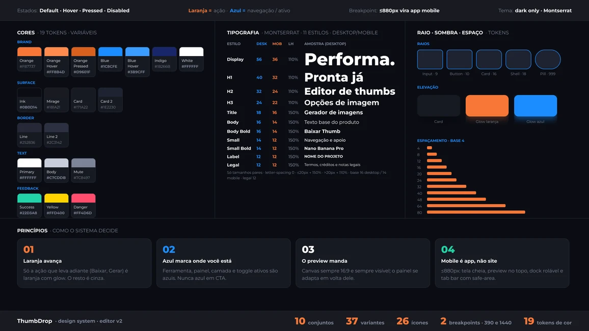
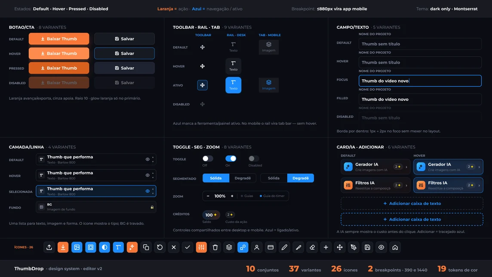

Projeto real · produto interno, IA no fluxo e design system
Thumb de designer, feita por quem não é designer. Em três minutos.
A Canaltech publica vídeo todo dia, e toda thumbnail passava pelo time de design. Desenhei o ThumbDrop: um editor interno que entrega a estética da casa para qualquer pessoa do time. Testei duas versões com usuários. A segunda, com remoção de fundo e filtros de IA dentro do editor, cortou o tempo pela metade e subiu o nível do resultado. Funcionou — e foi encerrado pelo custo por imagem.
- Cliente
- Canaltech ferramenta interna de thumbnails
- Papel
- Product design, UX e design engineer
- Entregas
- Pesquisa · 2 versões design system · protótipo
- Feito com
- Claude Design ⇄ Figma via MCP PhotoRoom API Gemini · Nano Banana
- Período
- 2026 · solo 2 versões, 2 rodadas de teste
Visão geral · Double Diamond
O projeto inteiro em uma tela, se você só tiver um minuto
Do gargalo no time de design até a thumb que qualquer pessoa exporta. As quatro etapas abaixo aparecem em detalhe no resto da página.
Espaço do problema
Thumb boa dependia de designer — e de Photoshop
Espaço da solução
Um editor com a estética da casa e a IA a um clique
01
Descobrir
Diverge
Toda thumbnail passava pelo time de design
Quem não é designer não domina Photoshop nem a marca
Montar rápido gerava colagem, não thumb de canal
IA de imagem resolvia a qualidade — mas fora de qualquer fluxo
02
Definir
Converge
O problema não é ferramenta: é conhecimento técnico
Critério: resultado de designer sem precisar saber design
Validar os filtros antes de pagar qualquer API
A estética da Canaltech vem pronta, não é escolha
03
Desenvolver
Diverge
V1: editor com fontes da casa e filtros como prompt copiável
Teste 1 · seis pessoas, 6 min por thumb, resultado de colagem
V2: PhotoRoom e Nano Banana dentro do editor
Seis filtros de direção de arte escritos como prompt
04
Entregar
Converge
Teste 2 · seis pessoas, 3 min por thumb, resultado superior
Thumbnail publicada no canal oficial da Canaltech
Design system e protótipo desktop + mobile para hand-off
Encerrado quando o custo por imagem não fechou
Meu escopo
Pesquisa→ UX e fluxo→ UI e design system→ Prompts e integraçãoDa entrevista ao editor que o time usou.
01 · O problema
A thumb não podia esperar o designer.
Thumbnail decide o clique, e o canal publica todo dia. Quando só o time de design sabe fazer uma thumb com a cara da Canaltech, cada vídeo entra numa fila. Quem produz o conteúdo tinha a imagem e a ideia — faltava o conhecimento técnico para chegar no acabamento.
1
time de design atendendo todas as thumbs do canal
3
ferramentas para uma thumb com IA: editor, PhotoRoom e Gemini
0
conhecimento de Photoshop exigido — o critério do projeto
6
filtros de direção de arte convertidos em prompt
02 · Antes e depois
A mudança não foi colocar IA. Foi trazer a IA para dentro.
A V1 já tinha os filtros — como prompt para copiar e colar no Gemini. O mesmo objetivo pelos dois caminhos. O que sai no meio não é recurso novo: é a troca de ferramenta que custava tempo e qualidade.
V1 · como era
Monta a thumb no ThumbDrop: imagem, texto e as fontes da casa
Precisa recortar? Abre o site do PhotoRoom e volta com o PNG
Clica no filtro: o prompt é copiado e a base limpa, baixada
Abre o Gemini e cola o prompt junto com a imagem
Baixa o resultado e traz de volta para finalizar
6 minutos em média, com resultado de colagem
Os passos 2, 4 e 5 acontecem fora do produto: cada um é uma troca de contexto e um arquivo a mais.
V2 · como ficou
Sobe a imagem e remove o fundo com um clique, sem sair do editor
Compõe com outras imagens, camadas e ferramentas de ajuste
Aplica um dos seis filtros: preview, confirma e exporta
3 minutos em média, com resultado que os participantes avaliaram como muito mais satisfatório. Uma ferramenta, nenhum arquivo intermediário.


03 · A hipótese da V1
Antes de pagar uma API, provar que o filtro funcionava.
Integrar IA custa dinheiro por imagem. Então a V1 testou a hipótese mais barata possível: se os prompts certos transformam uma montagem simples em thumb de canal, a pessoa aceita copiar e colar para chegar lá?
Hipótese
Com as fontes da casa e um prompt bem escrito, qualquer pessoa chega numa thumb com cara de designer.
Teste mais barato
Filtro como prompt copiável, com a base limpa baixada junto. Zero custo de API: a pessoa usa a própria conta do Gemini.
Remoção de fundo
Sem integração: um atalho para o site do PhotoRoom, que devolve o PNG recortado.
O que medimos
Tempo por thumb, do upload ao download, e a qualidade percebida por quem montou.
Quem testou
Seis pessoas do time que precisam de thumb, montando uma thumb de pauta real.
O risco assumido
Três ferramentas no fluxo. Se o tempo não caísse, saberíamos se o gargalo era a troca de contexto.
04 · Pesquisa
Duas rodadas, seis pessoas cada, e um tempo que caiu pela metade.
Cada versão foi testada com seis pessoas fazendo a mesma tarefa: uma thumb completa, do upload ao download. A primeira rodada mostrou onde o fluxo quebrava; a segunda confirmou se a mudança resolvia.
Teste da V1
Usuários · tarefa real
Seis pessoas montam uma thumb com a V1. Tempo medido do upload ao download.
Resultado · 6 min em média, acabamento de colagem
Onde o fluxo quebra
Humano · diagnóstico
O filtro funcionava. O que custava tempo e qualidade era sair do produto: recortar fora, colar o prompt fora, voltar com arquivo.
V2: a IA vai para dentro
Humano · autoral
Remoção de fundo e filtros viram ações do editor, com preview antes de confirmar e custo visível em créditos.
Decisão minha · o que entra no fluxo e o que fica fora
PhotoRoom + Nano Banana
Assistido · APIs
As duas APIs entram no editor. Os seis prompts passam a rodar sobre a composição inteira, sem arquivo intermediário.
Teste da V2
Usuários · mesma tarefa
Seis pessoas, a mesma tarefa, agora na V2.
Resultado · 3 min em média, resultado muito mais satisfatório
O que o teste 1 mostrou
A hipótese estava certa e o fluxo, errado. Os prompts entregavam qualidade; a troca entre três ferramentas é que devolvia uma colagem e dobrava o tempo.
Onde a IA não decide
A IA executa o filtro. A direção de arte — luz, pele, contraste, o que preservar — está escrita no prompt, e o prompt é decisão de design.
Sobre a amostra
Seis pessoas por rodada é teste de usabilidade qualitativo, não estatística. Serve para achar onde o fluxo quebra — e foi exatamente o que encontrou.
Rodada 1 · V1
6 min por thumb · resultado de colagem
Rodada 2 · V2
3 min por thumb · resultado superior
Mesma tarefa
Uma thumb completa, do upload ao download
O tempo caiu pela metade quando a IA deixou de estar em outra aba.
05 · Decisões da V2
Quatro decisões para a IA caber no fluxo.
Colocar uma API dentro do editor é a parte fácil. O difícil é a pessoa confiar no resultado, entender o custo e não perder o trabalho que já fez.
01
Filtro é direção de arte, não efeito
Cada prompt manda preservar sujeito, enquadramento e fundo, e só então mexe em luz, pele e cor. O filtro melhora a thumb sem trocar a pauta.
Por quê: um filtro que inventa um fundo novo quebra a notícia — e o jornalismo do canal.
02
Preview antes de aplicar
O filtro abre um Modo preview · IA no canvas: descartar ou “OK, usar este”. Aprovado, o resultado entra como camada própria e vai para a galeria de IA.
Por quê: IA erra. Sem preview, um clique ruim destrói o trabalho feito e a confiança na ferramenta.
03
O custo aparece antes do clique
Toda ação de IA mostra o preço em créditos — 2 por filtro, geração ou recorte — e o saldo fica fixo no topo do editor.
Por quê: quando cada imagem custa dinheiro, esconder o preço é empurrar a conta para depois.
04
Dois filtros saíram, dois entraram
Minimalista e Tecnológico deram lugar a Retrô e Épico. Dramático, Vívido, Cinematográfico e Quente ficaram.
Por quê: no teste, Minimalista e Tecnológico não agradaram visualmente — nem a mim, nem aos participantes. Retrô e Épico entraram porque encaixam nas pautas que o canal usa de verdade, como temas retrô e de grande impacto.


06 · Os filtros
Seis direções de arte, um clique cada.
O filtro é o jeito de um designer dizer o que faria com a foto — escrito uma vez, reaplicado por qualquer pessoa. Todos partem da mesma regra: manter sujeito, enquadramento e fundo; mudar só o acabamento.
a composição montada no editor
sombras profundas, luz intensa
cor saturada, energia
cor gradada, clima de filme
grão e pátina âmbar
luz de arena, heroico
golden hour, acolhedor
Mesma foto, mesmo texto, seis direções.
Sujeito, enquadramento e título ficam onde estavam. Muda só a luz, a pele e a cor — é a regra de preservação escrita em todos os prompts.
6
filtros, todos com a mesma regra de preservação
2
créditos por aplicação, visíveis antes do clique
1
clique do filtro até a thumb no canvas
2
APIs no fluxo: PhotoRoom e Nano Banana
07 · Craft
Uma ferramenta interna com acabamento de produto.
Ferramenta interna costuma ser feia porque “é só pro time”. Aqui o acabamento é parte da função: se a interface compete com a thumb, a pessoa erra a thumb. Cada escolha visual abaixo existe para o conteúdo aparecer e a próxima ação ficar óbvia.



Por que funciona
Dark para a thumb brilhar
Contraste
A interface some em #0B0D14 para a única coisa colorida da tela ser a thumbnail.
Laranja só onde avança
Hierarquia
Baixar e Gerar são os únicos laranjas com brilho. O olho acha a saída sem procurar.
Azul marca onde você está
Estado
Ferramenta, aba, camada e toggle ativos são azuis. Nunca azul em ação.
O preview nunca sai da tela
Layout
Canvas 16:9 fixo; o painel se adapta em volta — à direita no desktop, embaixo no mobile.
Mobile é app, não site
Responsivo
Até 880px: tela cheia, dock rolável e tab bar com área segura. Mesmos componentes, outro modo.
Custo e IA sempre à vista
Confiança
Badge de crédito em toda ação de IA e Modo preview com borda azul antes de aplicar.
Texto que troca de modo
16 → 14
O mesmo estilo vira 14 no mobile. Só tamanhos pares, entrelinha 150% e 110%.
Guia do timer 16:20
Detalhe
A área que o YouTube cobre com a duração aparece no canvas, para ninguém escrever embaixo.
Direção de arte embutida
Marca
Fontes, molduras e fundos da casa já vêm prontos. A estética não é uma escolha da pessoa.
Estados desenhados
Sistema
Hover, pressed, disabled e foco em todos os controles. Nada fica para o dev inventar.
08 · Design system
10 conjuntos, 37 variantes, e cada tela montada só com instâncias.
O sistema existe para a próxima tela sair sem desenho novo: os 8 painéis são variantes de um único componente, e o mesmo estilo de texto passa de 16 para 14 quando a tela é mobile.
#F87737 · ação que avança e exporta
#1C8CFE · ativo, foco e navegação
#0B0D14 · fundo do editor
#171A22 · painéis e cards
#FFD400 · créditos e custo de IA
#22D3A8 · confirmação
Seis das 19 cores de base. As outras 11 são tints com alfa embutido — criados porque opacidade sobre variável não renderiza de forma confiável dentro de instâncias.
Os conjuntos-chave
Painel/Conteúdo
8 variantes
um por painel, de Texto a Moldura, e 3 subpainéis
Botão/CTA
2 tipos × 4 estados
laranja avança, cinza apoia
Editor/Canvas
2 dispositivos × 2 estados
padrão e Modo preview · IA
Editor/Rail · Tab Bar
5 + 5 variantes
a aba ativa é a variante
Filtro/IA
2 estados
letra, nome, descrição e custo
Campo/Texto
5 estados
foco com borda interna de 2px
Card/IA
2 tipos × 2 estados
Gerador e Filtros com badge de crédito
Toggle
3 estados
desligado, ligado e desabilitado
Thumb/Fundo
2 estados
galeria 16:9 com nome
Ícones
26 ícones
SVG do próprio código, stroke 24px
- 30
- tokens de cor, 11 com alfa
- 11
- estilos de texto responsivos
- 15
- passos de espaçamento
- 5
- raios
- 2
- modos de layout: desktop e mobile
- 10
- conjuntos de componentes


09 · Números
O que foi medido — e o que não foi.
Os tempos vêm das duas rodadas de teste. Os demais números são de construção e podem ser conferidos no arquivo do Figma.
6 min
por thumb na V1, com resultado de colagem
3 min
por thumb na V2, com resultado superior
−50%
no tempo por thumb entre as versões
6
pessoas em cada rodada de teste
2
versões testadas com usuários
6
filtros de IA escritos como prompt
3 → 1
ferramentas no fluxo de uma thumb com IA
1
thumb publicada no canal oficial
2×
custo de IA por thumb contra o Higgsfield: ≈ R$ 1,05 × R$ 0,50
16
telas no protótipo navegável
O que não está aqui.
Nenhum dado de CTR ou views atribuído à thumb: o desempenho de um vídeo depende de pauta, título e algoritmo. O teste mediu tempo e a qualidade percebida pelos participantes.
10 · Por que encerramos
Funcionou. E a conta não fechou.
O produto entregou o que prometia. O problema foi a escala: cada filtro e cada recorte passavam por uma API paga, e o custo de IA por thumb chegou a cerca do dobro do Higgsfield — plataforma que a equipe já usava e que compra o mesmo modelo em volume.
Filtro: R$ 0,72 por aplicação via API do Nano Banana (média de R$ 0,76 por geração), contra R$ 0,50 no Higgsfield — 44% a mais só nessa etapa.
Remoção de fundo: US$ 20 por 1.000 imagens no PhotoRoom, mas cerca de 3 recortes por thumb — a pessoa testa, descarta e recorta de novo. ≈ R$ 0,33 por thumb.*
Somando: ≈ R$ 1,05 de IA por thumb no ThumbDrop — cerca do dobro dos R$ 0,50 do Higgsfield.
A conta do Higgsfield: plano de R$ 250 com 1.000 créditos. A 2 créditos por imagem, são 500 imagens por mês, a R$ 0,50 cada.
E o custo não era só a API: construir, dar suporte e manter uma ferramenta própria, com a equipe já trabalhando em outras ferramentas. Mudar o fluxo de todo mundo para pagar mais por imagem não se sustentava.
O que eu faria diferente: medir o custo por thumb já na V1, junto com o tempo, e cobrar o recorte só na confirmação. Três recortes por thumb mostram que a tentativa e erro estava sendo paga.
Deixado pronto para voltar: depois da segunda rodada eu reorganizei a interface no arquivo final — a ordem dos painéis e das ações — para que uma eventual reativação comece de um fluxo melhor, e não de onde o teste parou. Por isso o arquivo não é idêntico ao que o vídeo da V2 mostra.
O que sobrou: o design system, o protótipo e seis prompts de direção de arte que funcionam em qualquer ferramenta. E a ironia do timing: o próprio canal publicou “Fim da IA barata?” — com uma thumb feita na V1.
* Câmbio de referência: R$ 5,50 por dólar.
11 · Mais
Outros projetos

CT em Campo
Uma ativação de Copa que não cabia no template do portal. Superfície dedicada, design system, motion e front-end — com o patrocinador dividindo tela com ninguém.

Canaltech · Hub de links
A página de links da Canaltech deixou de ser alugada. Design system, acessibilidade, consentimento e telemetria num HTML único que o time publica sem build.
Disponível para trabalhar
Desenho, escrevo o código e digo o que não deu certo.
Treze anos de design, cinco deles na Canaltech entre design system, marketing e comercial. Se você tem uma superfície que precisa sair pronta e medida, e não especificada, me chama.
© 2026 Erick Teixeira
oerickteixeira@gmail.com · São Paulo